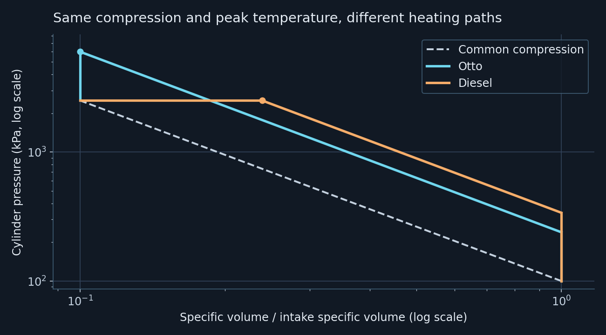

Chapter 12 · Lectures 35–37
Otto and Diesel Cycles
Compare ideal spark-ignition and compression-ignition cycles under shared temperature and compression constraints, then relate work to cylinder displacement.
The same plant needs small reciprocating backup units that can start independently of the main generator. The air-standard cycles answer the first sizing question: how much work can a unit extract from a fixed trapped mass at the same intake and permissible peak temperature? Capacity per cylinder also depends on how much work is produced per swept volume. Increasing compression ratio can improve efficiency yet change that second result in the opposite direction.
From four strokes to a closed-mass model Lecture 35 · 1:40
A four-stroke engine admits a charge, compresses it, expands the heated gas, and expels combustion products. A spark-ignition engine initiates combustion with a spark, whereas a compression-ignition engine injects fuel into hot compressed air. The air-standard model replaces intake and exhaust with heat rejection, combustion with heat input, and the actual charge with a fixed mass of air. Here the cold-air standard uses constant \(c_v\) and \(c_p\), the specific heats at constant volume and pressure. Let \(\gamma=c_p/c_v\) and \(R=c_p-c_v\) in consistent mass-specific units.
Let \(v_1\) be volume per kg at bottom dead center, the maximum cylinder volume, and \(v_2\) its value at top dead center, the minimum. The geometric compression ratio is \(r=v_1/v_2>1\). States 1, 2, 3, and 4 represent the start of compression, end of compression, end of heat addition, and end of expansion. Use \(T_i\) for the corresponding temperatures in K and \(p_i\) for absolute pressures. Changes in gas speed and elevation are neglected. Compression and expansion are adiabatic and reversible. With \(p v=RT\) and \(du=c_v\,dT\), the closed-system identity \(du=T\,ds-p\,dv\) gives \(ds=c_v\,dT/T+R\,dv/v\). On an isentrope, \(Tv^{\gamma-1}\) is constant. The compression raises temperature to \(T_2=T_1r^{\gamma-1}\).
Otto heat addition and mean effective pressure Lecture 35 · 11:40
The Otto idealization puts all heat input at \(v_2\) and rejection at \(v_1\). The boundary work vanishes on these two constant-volume legs. Let \(q_H\) and \(q_L\) be positive specific heat input and rejection, in kJ/kg. Then \(q_H=c_v(T_3-T_2)\) and \(q_L=c_v(T_4-T_1)\). The isentropic expansion gives \(T_4=T_3/r^{\gamma-1}\). Therefore \(T_4-T_1=(T_3-T_2)/r^{\gamma-1}\). The net specific work and efficiency are
\[ w_{\rm net}=q_H-q_L,\qquad \eta_O=1-r^{-(\gamma-1)}. \]
In a real spark-ignition cylinder, the remaining unburned charge ahead of the flame can autoignite and produce rapid pressure oscillations called knock. Mixture, ignition timing, fuel properties, heat transfer, and cylinder design influence this behavior. The model's gain at high \(r\) describes an ideal thermodynamic relation and supplies no knock boundary. Lecture 35 · 18:00
Mean effective pressure, or MEP, is the net work divided by swept volume. In specific units \(\mathrm{MEP}=w_{\rm net}/(v_1-v_2)\), with kJ/m³ equal to kPa. It is the hypothetical constant pressure that would yield the same work over the swept volume. It differs from peak pressure. The intake equation of state gives \(\mathrm{MEP}=p_1 w_{\rm net}/[R T_1(1-1/r)]\). At a fixed cylinder displacement, MEP and cycle frequency determine the indicated power before mechanical losses. The lecture uses variable-property tables for the full Otto worked case. With those tables, replace \(c_v\Delta T\) on an isochore by \(u(T_{\rm end})-u(T_{\rm start})\). Lecture 35 · 27:40 Lecture 35 · 33:40
Diesel heat addition and cutoff Lecture 36 · 9:20
The Diesel idealization supplies heat at constant pressure as the piston moves. Define cutoff ratio \(r_{\rm cut}=v_3/v_2\), with \(1<r_{\rm cut}<r\) for positive heat addition and expansion. Since \(p_3=p_2\), ideal-gas temperature rises to \(T_3=r_{\rm cut} T_2\). The gas moves the piston during heat addition. The first law gives \(q_H=u_3-u_2+p_2(v_3-v_2)=h_3-h_2=c_p(T_3-T_2)\), where \(h\) is specific enthalpy. Heat rejection returns to constant volume at \(v_1\) and uses \(q_L=c_v(T_4-T_1)\). The expansion ratio is \(v_4/v_3=r/r_{\rm cut}\). Therefore \(T_4=T_3(r_{\rm cut}/r)^{\gamma-1}=T_1r_{\rm cut}^\gamma\) and
\[ \eta_D=1-\frac{1}{r^{\gamma-1}}\frac{r_{\rm cut}^\gamma-1}{\gamma(r_{\rm cut}-1)}. \]
At common \(r\), the factor multiplying \(1/r^{\gamma-1}\) exceeds one for \(r_{\rm cut}>1\), since it is the average of \(z^{\gamma-1}\) on \(1\le z\le r_{\rm cut}\). At a larger compression ratio, a Diesel cycle can nevertheless exceed an Otto cycle's ideal efficiency. Higher attainable geometric compression is one reason a comparison at the same \(r\) answers a narrower question than an engine choice. MIT Unified Engineering, Diesel cycle Lecture 37 · 0:00
Holding intake and peak temperatures fixed Lecture 36 · 15:20
For the backup candidate let \(p_1=100\) kPa, \(T_1=300\) K, \(T_3=1800\) K, \(c_v=0.718\) kJ/(kg K), and \(\gamma=1.4\). The Diesel cutoff is chosen from \(r_{\rm cut}=T_3/T_2\). The three rows therefore hold intake and peak temperature fixed while varying heat duty or compression by design.
| Cycle | \(q_H\) (kJ/kg) | \(w_{\rm net}\) (kJ/kg) | Efficiency | MEP (kPa) |
|---|---|---|---|---|
| Otto, \(r=10\) | 751.3 | 452.2 | 60.19% | 583.2 |
| Diesel, \(r=10\) | 1051.9 | 538.4 | 51.18% | 694.3 |
| Diesel, \(r=18\) | 851.1 | 542.1 | 63.69% | 666.1 |

The two designs at \(r=10\) have different peak pressures as well as different heat inputs. Otto heat addition raises pressure throughout the constant-volume leg. Diesel heat addition holds pressure at its end-of-compression value. The higher-compression Diesel candidate requires less heat per kg at the same peak temperature than the lower-compression Diesel candidate, so its increase in efficiency compensates for lower input. Its MEP still falls because the net work is spread over a larger specific swept volume. A cycle with part constant-volume and part constant-pressure heat addition is called a dual cycle. Its heat input is \(c_v\Delta T\) on the first leg and \(c_p\Delta T\) on the second. This model can better approximate a finite pressure rise during combustion. Lecture 37 · 9:40
The efficiency here converts heat added to the modeled gas into indicated boundary work. Comparisons of real fuel consumption or emissions also depend on combustion, pumping, mechanical losses, aftertreatment, duty cycle, and upstream processes included in the accounting. If heat enters from one reservoir at \(T_H\), the exergy input relative to \(T_0\) is \((1-T_0/T_H)q_H\). Fuel chemical exergy is required for direct analysis of combustion as an internal process. Lecture 35 · 23:20
Reconstruct the cycles with variable specific heats
At high temperatures, use the variable-specific-heat air-table method. From \(ds=c_v(T)dT/T+R\,dv/v\), the isentropic volume ratio obeys
\[ \frac{v_b}{v_a}=\frac{v_r(T_b)}{v_r(T_a)},\qquad v_r(T)=C\exp\!\left[-\frac{1}{R}\int_{T_*}^{T}\frac{c_v(\theta)}{\theta}\,d\theta\right]. \]
The positive reference constant \(C\) and reference temperature \(T_*\) cancel in the ratio. Given \(T_1\), obtain \(v_r(T_2)=v_r(T_1)/r\) and invert the table for \(T_2\). In the Otto cycle, use the specified \(T_3\) and solve \(v_r(T_4)=r\,v_r(T_3)\). In the Diesel cycle, set \(T_3=r_{\rm cut} T_2\) and solve \(v_r(T_4)=(r/r_{\rm cut})v_r(T_3)\). Use \(u_3-u_2\) for Otto heat input, \(h_3-h_2\) for Diesel heat input, and \(u_4-u_1\) for heat rejected in either cycle.
In the lecture's Otto example, air starts at 298 K and 100 kPa, with \(r=9\) and \(T_3=2200\) K. The table gives \(v_r(T_1)\approx631.9\), so the compression ends at the temperature corresponding to \(v_r(T_2)\approx70.2\). The reported heat inputs and rejections are about 1361 and 646 kJ/kg, giving roughly 715 kJ/kg net work and 52.5% efficiency. The cold-air expression at \(r=9\) with \(\gamma=1.4\) gives 58.5%. In the lecture's Diesel example at \(r=18.75\) and \(r_{\rm cut}=2.4283\), the variable-property calculation gives about \(867.75/1564.5=55.5\%\), compared with 61.9% from the constant-\(\gamma\) expression. Lecture 35 · 28:00 Lecture 37 · 0:00
The lecture's second-law accounting credits exergy delivered on the expansion side and charges exergy supplied on the compression and heating side. With \(w_{\rm comp}=u_2-u_1>0\), \(w_{\rm out}=w_{\rm net}+w_{\rm comp}\), with ambient pressure \(p_0\), ambient temperature \(T_0\), and a hot reservoir at \(T_H\), the ratio is \([w_{\rm out}-p_0(v_1-v_2)]/[w_{\rm comp}-p_0(v_1-v_2)+(1-T_0/T_H)q_H]\). In the Diesel case \(w_{\rm out}\) includes displacement work during heating. For a boundary around the whole cycle, the ambient displacement terms cancel, and the ratio of net work to thermal exergy input is \(w_{\rm net}/[(1-T_0/T_H)q_H]\) when rejection is to \(T_0\). State which accounting convention is used when comparing second-law efficiencies. Lecture 35 · 36:20 Lecture 37 · 8:40
Numerical laboratory
Run the Python laboratory with standard Python. It takes a choice of cycle, the intake and peak temperatures, compression ratio, and gas constants. It returns heat, work, efficiency, and mean effective pressure as a ratio to intake pressure. It checks the closed-form Otto result and the ordering of efficiencies in the table. An invalid temperature or volume sequence raises a value error.
Exercises and worked solutions
Distinguish cutoff and compression ratios
Compute cutoff and effective expansion ratios for the Diesel cycle at \(r=18\).
Show solution
Solution. The compression ends at \(T_2=300(18)^{0.4}\approx953.3\) K. Thus \(r_{\rm cut}=1800/953.3\approx1.888\) and \(r/r_{\rm cut}\approx9.53\). The piston begins expansion at a larger volume than the minimum clearance volume because heat addition has already displaced it.
Peak pressure in the Otto example
Determine the ideal peak pressure at \(r=10\).
Show solution
Solution. State 3 remains at \(v_2=v_1/10\), so \(p_3/p_1=(T_3/T_1)(v_1/v_2)=6(10)=60\). The peak is 6000 kPa. The 583.2 kPa mean effective pressure describes the entire net-work loop per swept volume.
Separate equal temperature and equal heat comparisons
At \(r=10\), prescribe the same \(q_H=751.3\) kJ/kg to the Diesel cycle. What happens to the Diesel peak temperature?
Show solution
Solution. Both cycles begin heating at \(T_2\approx753.6\) K. The Diesel heat input gives \(T_3=T_2+751.3/(1.4\cdot0.718)\approx1501\) K. During the constant-pressure leg part of the input does boundary work and the required heat per kelvin is \(c_p\).
Zero-heating limit
Evaluate the Diesel efficiency expression as \(r_{\rm cut}\to1\) from above.
Show solution
Solution. The ratio \((r_{\rm cut}^\gamma-1)/[\gamma(r_{\rm cut}-1)]\) tends to one by differentiation. Thus the efficiency tends to the Otto value at the same \(r\). Both Diesel heat input and net work approach zero. A finite limiting efficiency does not provide finite cycle output.